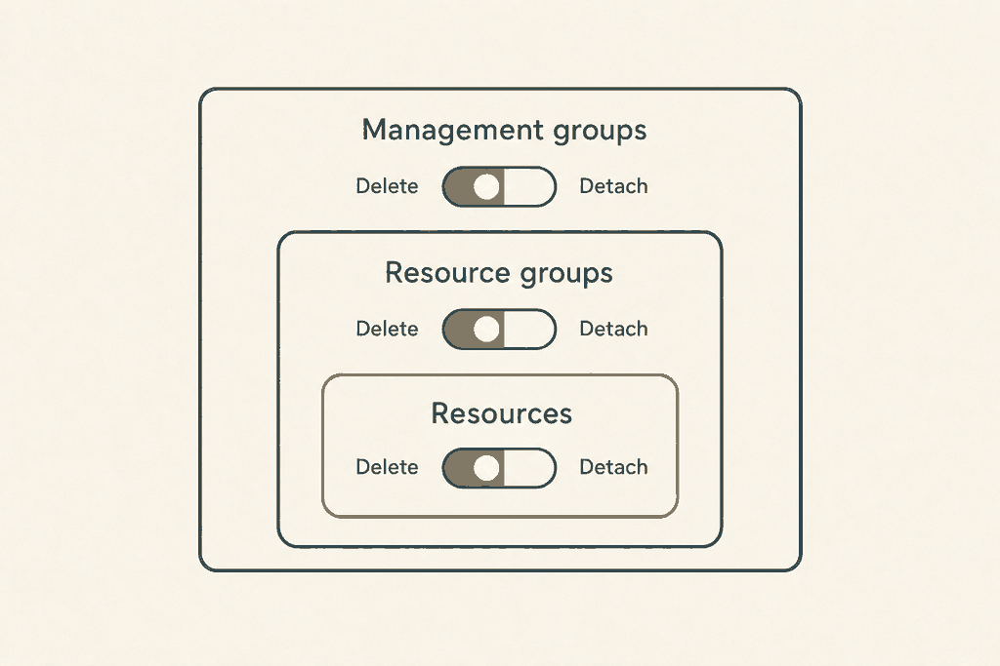
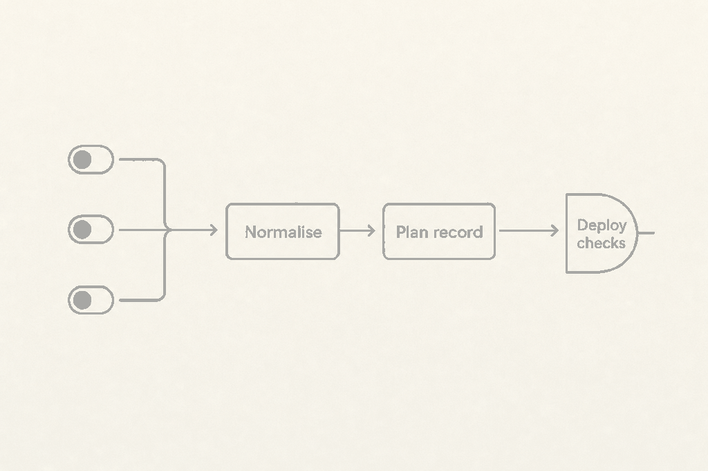

Plan: Granular action on unmanage

Purpose
Let a pipeline say separately what a deployment stack does with an unmanaged resource, resource group and management group, as Azure does, while every existing pipeline keeps working and the "deploy exactly what was planned" promise holds for every combination.
Problem
The only control is stack_action_on_unmanage with detachAll, deleteResources and deleteAll (scripts/az-deploy.sh:351). These are the three values of the CLI flag --action-on-unmanage. They hide which kind of object each value affects, and they cannot express anything else.
Checked against the installed Azure CLI 2.87.0 (az stack group|sub|mg create --help): there is no granular flag. Only --action-on-unmanage exists, with those three values, and --resources-without-delete-support (detach or fail), which this repository does not use. The az stack-whatif command that the script calls is not present in that CLI at all, so what-if could not be exercised locally.
| CLI value | resources | resource groups | management groups |
|---|---|---|---|
detachAll | detach | detach | detach |
deleteResources | delete | detach | detach |
deleteAll | delete | delete | delete |
The issue's example, "delete unmanaged resources but never delete a resource group", already works today as deleteResources. The real gaps are explicitness, scope awareness, and one combination (delete resources and resource groups, detach management groups) that the CLI cannot express.
Solution
Add three inputs (stack_action_on_unmanage_resources, _resource_groups, _management_groups) next to the shorthand. A new sourced script, scripts/stack-unmanage.sh, resolves shorthand or granular values into one normalised triple, validated for the scope and for nesting. The triple, not the input style, then drives four things: the CLI argument, the plan record, the delete gate, and the deploy-time refusal on mismatch.

Rules, in short:
- The shorthand and any granular input together is an error. Nothing set is
detachAll. An unset granular value isdetach. - Kinds that do not apply at the scope are dropped: resource groups at
group; management groups atgroupandsub.deletefor such a kind is an error. This keepsdeleteAllworking at every scope. - Nesting rule:
resource_groups: deleteneedsresources: delete;management_groups: deleteneeds both others to bedelete. That leaves 4 valid triples atmg, 3 atsub, 2 atgroup. - A valid triple equal to a CLI row is passed as
--action-on-unmanage. The only other valid triple, delete, delete, detach atmg, is refused with a clear message until the CLI can express it. - Any
deletein the triple means delete mode: approved list, non-deterministic failure and the second gate run all apply.
Valid combinations by scope
| resources | resource groups | management groups | group | sub | mg | CLI value |
|---|---|---|---|---|---|---|
| detach | detach | detach | valid | valid | valid | detachAll |
| delete | detach | detach | valid | valid | valid | deleteResources |
| delete | delete | detach | n/a (rg dropped) | valid, same as deleteAll | valid, not expressible | none |
| delete | delete | delete | valid | valid | valid | deleteAll |
| detach | delete (any) | any | refused: contradicts nesting | none | ||
| delete | detach | delete | refused: contradicts nesting | none | ||
The raw 2×2×2 grid has eight cells. The nesting rule refuses four at mg scope, delete at a kind that does not apply is refused at the lower scopes, and the rest map as above. The tests (phase 5) enumerate all eight cells at all three scopes, 24 cases, plus the shorthand and conflict cases.
Relevant Files
Existing Files
- existing
scripts/az-deploy.sh— reads the value (351), buildscommon(382), the plan record and check (306, 384), the delete gatestack_whatif_gate(388-499), the second gate run (519), the summarystackSettings(483), the create command (526). - existing
.github/actions/plan/action.yml— input at 48, env at 238,stack_settingsoutput at 124. - existing
.github/actions/deploy/action.yml— input at 38, env at 187,plan_stack_settingsinput at 46. Also its "Add scripts to system path" step, which already exposes every file inscripts/. - existing
.azuredevops/ms.azure.deploy.yml— the single-file pipeline. Two script download lists (lines 93 and 318) and the variables block (line 16) where the new variables are shown commented out. - existing
.azuredevops/templates/plan-stage.yml(list at 82) and.azuredevops/templates/deploy-stage.yml(list at 97) — script download lists. - existing
.azuredevops/README.md— mentions the stack variables; check for a list to extend. - existing
docs/configuration.md— settings table (46), thestack_action_on_unmanagesection (136-146), the approved deletes text (146, 165), outputs table (262), recommended settings (290). - existing
docs/how-it-works.md— settings check (103), delete mode (104), flowchart (149), unmanaged resources (157-163), summary file (290). - existing
docs/troubleshooting.md— lines 37-38 namedetachAllas the fix. - existing
docs/examples/github/recommended.yml(30, 64, 100),docs/examples/azure-devops/*.yml— examples.
New Files
- new
scripts/stack-unmanage.sh— sourced helper:resolve_unmanage,classify_change_kind,unmanage_kind_violations. - new
scripts/tests/stack-unmanage.test.sh— resolver matrix tests with no Azure access. - new
scripts/tests/stack-gate.test.sh,scripts/tests/fixtures/*.json,scripts/tests/bin/az— stubbedazand canned what-if results that runaz-deploy.shend to end. - new
scripts/tests/run.sh— runs every test, for local use and CI.
Implementation Phases
IMPORTANT: Execute every phase and task step by step, in order, top to bottom.
Status markers: [] idle · [wip] in progress · [x] complete · [f] failed. All start as []; the Build Plan workflow updates them as it works.
[] Phase 1: Spike, verify what Azure and the CLI accept
Three facts in this plan are assumptions that cannot be checked from the installed tooling: what the stack API accepts for each combination, what an unmanaged resource group looks like in a what-if result, and whether a newer CLI has granular flags. Settle them before writing code, in a throwaway subscription.
1. Record the facts
[]On a CLI newer than 2.87.0, if one exists, runaz stack sub create --helpandaz stack mg create --helpand look for flags beyond--action-on-unmanage. Write the CLI version and result into the ADR (Context).[]Create a subscription stack with two resource groups, remove one group from the template, runaz stack-whatif sub createand capture the JSON ofaz stack-whatif sub show --no-pretty-print. Confirm the exactidformat of a resource group change (expected/subscriptions/<id>/resourceGroups/<name>) and that itschangeTypeisdeleteordetach. Save the JSON asscripts/tests/fixtures/whatif-rg-delete.jsonafter removing real IDs.[]Repeat at management group scope for a unmanaged management group and a subscription, and confirm the ID format (expected/providers/Microsoft.Management/managementGroups/<name>).[]With the REST API (az rest, API version used byAzure/bicep-deploy), sendactionOnUnmanagewithresources: detachandresourceGroups: deleteand note whether Azure accepts it. This decides the nesting rule (Questionable 1).
2. Testing Strategy
No code yet. The evidence is saved fixtures and a short note in the ADR. Nothing from a customer subscription is saved: replace subscription IDs and names with generic placeholders before committing.
[]jq -e '.properties.changes.resourceChanges | length > 0' scripts/tests/fixtures/whatif-rg-delete.json— the fixture parses and has changes.[]grep -rIiE 'subscriptions/[0-9a-f]{8}-' scripts/tests/fixtures | grep -v 00000000— prints nothing, so no real subscription ID was committed.
[] Phase 2: The resolver, scripts/stack-unmanage.sh
One sourced file holds all the policy, so GitHub, Azure DevOps and the tests use the same code. Follow the shape of scripts/bicep-version.sh: functions, results in variables, an error string, no output of its own.
1. Write the functions
[]Createscripts/stack-unmanage.shwith the licence header used by the other scripts and a# shellcheck disable=SC2034line for the variables the caller reads.[]resolve_unmanage <scope>: readsSTACK_ACTION_ON_UNMANAGE,STACK_ACTION_ON_UNMANAGE_RESOURCES,..._RESOURCE_GROUPS,..._MANAGEMENT_GROUPS. On success setsUNMANAGE_RESOURCES,UNMANAGE_RESOURCE_GROUPS,UNMANAGE_MANAGEMENT_GROUPS(delete,detachor empty for a kind that does not apply),UNMANAGE_LEGACY(the CLI value or empty),UNMANAGE_RECORD(the plan record text),UNMANAGE_DELETE_MODE(trueorfalse). On failure returns 1 and setsUNMANAGE_ERROR.[]classify_change_kind: a jq function string,UNMANAGE_KIND_JQ, mapping a change ID toresources,resourceGroupsormanagementGroups. It is a string so the gate can embed it in its existing jq calls.[]unmanage_kind_violations <json>: prints the IDs ofdeletechanges whose kind isdetachin the triple. Empty output means the result is consistent with the plan.
# resolve_unmanage, the non-obvious parts
resolve_unmanage() {
local scope="${1}" short="${STACK_ACTION_ON_UNMANAGE-}"
local r="${STACK_ACTION_ON_UNMANAGE_RESOURCES-}"
local g="${STACK_ACTION_ON_UNMANAGE_RESOURCE_GROUPS-}"
local m="${STACK_ACTION_ON_UNMANAGE_MANAGEMENT_GROUPS-}"
UNMANAGE_ERROR=''
if [ -n "${short}" ] && { [ -n "${r}" ] || [ -n "${g}" ] || [ -n "${m}" ]; }; then
UNMANAGE_ERROR='Set either stack_action_on_unmanage or the stack_action_on_unmanage_* inputs, not both.'
return 1
fi
if [ -n "${g}${m}${r}" ]; then
r=$(lower "${r:-detach}"); g=$(lower "${g:-detach}"); m=$(lower "${m:-detach}")
# each must be delete or detach, else error naming the input
else
case "$(lower "${short:-detachAll}")" in
detachall) r=detach; g=detach; m=detach;;
deleteresources) r=delete; g=detach; m=detach;;
deleteall) r=delete; g=delete; m=delete;;
*) UNMANAGE_ERROR="Unknown stack_action_on_unmanage '${short}'."; return 1;;
esac
fi
# 1. kinds that do not apply: delete is an error, detach is dropped
case "${scope}" in
group) [ "${g}" = delete ] && { [ -n "${short}" ] || err; }; g=''; m='';;
sub) m='';;
esac
# (the shorthand deleteAll expands to delete for every kind, so dropping is
# silent for the shorthand; only an explicit granular delete errors)
# 2. nesting
[ "${g}" = delete ] && [ "${r}" != delete ] && err 'resource groups cannot be deleted while resources are detached'
[ "${m}" = delete ] && { [ "${r}" != delete ] || [ "${g}" != delete ]; } && err 'management groups ...'
# 3. CLI mapping and record over the applicable kinds only
local key="${r}/${g:-n}/${m:-n}"
case "${key}" in
detach/detach/detach|detach/n/n|detach/detach/n) UNMANAGE_LEGACY=detachAll;;
delete/detach/detach|delete/n/n|delete/detach/n) UNMANAGE_LEGACY=deleteResources;;
...
esac
}The group case needs care: delete/n/n at group scope must map to deleteAll when it came from the shorthand deleteAll, because that is what the CLI value was and what the plan record said before. Decide the CLI value from the pre-drop triple only when the shorthand was used; from the post-drop triple when granular inputs were used. Write the mapping as a table of (scope, post-drop triple) to (CLI value), not as nested conditionals, so the test can print the table.
2. Define the plan record
[]UNMANAGE_RECORDequalsUNMANAGE_LEGACYwhenever one exists, so the existingunmanage=detachAlltext is unchanged. For the one non-CLI triple it isresources:delete,resourceGroups:delete,managementGroups:detach. The record is built from the applicable kinds only, so agroupplan never mentions management groups.[]Keep the record key order and separators identical to today (stack;id=…;unmanage=…;deny=…) so a plan made by an older release still compares equal.
3. Testing Strategy
Pure bash tests, no Azure. Each case sets the four environment variables, sources the script, calls resolve_unmanage and asserts the outputs. Edge cases: empty everything, shorthand in odd case, granular partially set, shorthand plus one granular, delete for a kind that does not apply, every nesting violation, and deleteAll at group scope.
[]shellcheck scripts/stack-unmanage.sh— clean.[]bash scripts/tests/stack-unmanage.test.sh— all 24 matrix cases (8 triples × 3 scopes) plus the shorthand and conflict cases pass.[]bash scripts/tests/stack-unmanage.test.sh --table— prints the (scope, triple) to CLI value table; compare it with the table in the Solution section.
[] Phase 3: Wire the resolver into az-deploy.sh
Replace the single variable with the triple at every place that used it. The goal is that a pipeline using only the shorthand produces byte-identical commands, records and summary values, with one added summary key.
1. Resolve and fail early
[]After the Bicep and subscription selection and beforestack_fallbackis decided (line 326),source "$(dirname "${BASH_SOURCE[0]}")/stack-unmanage.sh"and callresolve_unmanage "${IN_SCOPE}". On failure use the existingstack_fail "${UNMANAGE_ERROR}", which writes the markdown comment and exits 1. When the stack falls back to a standard deployment (tenant scope, Bicep extensions) the resolver is skipped, because nothing can be unmanaged. If a granular input is set there, log a warning that it is ignored.[]Line 351: removeunmanage="${STACK_ACTION_ON_UNMANAGE:-detachAll}". Keep a display stringunmanage="${UNMANAGE_RECORD}"for the comment text.[]Line 382: ifUNMANAGE_LEGACYis empty,stack_failwith the "not expressible by this Azure CLI" message and the three-value triple; otherwisecommon=(--action-on-unmanage "${UNMANAGE_LEGACY}" --deny-settings-mode "${deny}"). Put the CLI-argument construction in one function,unmanage_cli_args, so a future CLI with granular flags changes one place.[]Line 384:check_plan_settings "stack;id=${stack_id};unmanage=${UNMANAGE_RECORD};deny=${deny}".
2. Refuse a mismatch at deploy, with a readable message
[]check_plan_settings(line 306) already refuses any difference. Extend only the message: when both strings containunmanage=, calldescribe_unmanage(instack-unmanage.sh) on each so the error reads "the plan used resources delete, resource groups detach; this deployment uses resources delete, resource groups delete". Fall back to the raw strings if a record cannot be parsed.[]Do not loosen the comparison: it stays a string compare of the full record, so a changed id or deny mode is still caught.
3. The delete gate
[]Line 469: replace[ "${unmanage}" != 'detachAll' ]with[ "${UNMANAGE_DELETE_MODE}" = true ], and the message textwith \`${unmanage}\`with the record. The "usedetachAll" advice becomes "detach the kinds you do not need to delete".[]Line 472: the information note applies whenUNMANAGE_DELETE_MODEisfalse, replacing= 'detachAll'.[]Line 519: the second gate run before create runs whenUNMANAGE_DELETE_MODEistrue. The log line prints the record.[]Afterdeletes=(line 436) add the kind check, and fold its result intounapproved's sibling variableunexpected: delete changes of a kind the triple detaches. If non-empty,gategets a message "Azure reports a delete of a kind this plan detaches" and the plan fails, even when the ID is in the approved list.[]The approved list is unchanged: one flat list, matched without case. A resource group delete is approved by listing the group's ID. Mention this in the docs.
# in stack_whatif_gate, after the deletes= line
unexpected=$(unmanage_kind_violations "${json}")
...
if test -n "${unexpected}"; then
gate="Azure reports deletes of a kind this plan detaches (${UNMANAGE_RECORD}). Nothing was deployed:${nl}${nl}$(sed 's/^/- `/; s/$/`/' <<< "${unexpected}")"
elif test -n "${unapproved}"; then
...4. Summary file
[]Line 483: add the three values and keepactionOnUnmanageas the record string. New shape:{actionOnUnmanage: $u, unmanage: {resources, resourceGroups, managementGroups}, denySettingsMode: $d}, where a kind that does not apply isnull.schemaVersionstays 1 because the change only adds a key. Update the example indocs/how-it-works.md.
5. Testing Strategy
Run the whole script against a stubbed az on PATH that answers stack-whatif with canned JSON from scripts/tests/fixtures/ and records the arguments it was given. Assert on the arguments, the exit code, the markdown file and whatif-summary.json. Cases below; the third is the acceptance case from the issue.
[]ShorthanddetachAllat each scope:--action-on-unmanage detachAllpassed; record unchanged; no second gate run; non-deterministic result passes with a note.[]ShorthanddeleteResourcesanddeleteAll: identical arguments, record and exit codes to the output of the unmodified script. Capture that baseline fromorigin/mainbefore editing and store it inscripts/tests/baseline/.[]Granulardelete,detach,detach(delete resources, detach resource groups) atsubscope with a fixture that deletes one resource and detaches one group: the resource must be approved, the detached group is only reported, and the plan passes when the ID is listed. Fails when it is not listed. Fails on a non-deterministic fixture. Gate runs twice on deploy.[]Same granular values with a fixture where Azure reports a resource group asdelete: fails with the "kind this plan detaches" message even though its ID is approved.[]Mismatch: plan record fromdeleteResources, deploy with granulardelete,delete,detachatmg: exits 1 and the message names both triples. The reverse also fails. The same behaviour through shorthand and through granular inputs matches.[]Conflict: shorthand plusstack_action_on_unmanage_resourcesexits 1 before anyazcall.[]Not expressible:delete,delete,detachatmgexits 1 with the message, and the stub saw nocreatecall.[]shellcheck scripts/az-deploy.sh scripts/stack-unmanage.shandbash scripts/tests/stack-gate.test.sh— all pass.
[] Phase 4: Inputs and wiring on GitHub and Azure DevOps
GitHub declares inputs and passes them as environment variables. Azure DevOps has no declaration: a pipeline variable STACK_ACTION_ON_UNMANAGE_RESOURCES reaches the script as an environment variable of the same name. What Azure DevOps does need is the new script in each download list.
1. GitHub actions
[].github/actions/plan/action.yml: add the three inputs afterstack_action_on_unmanage(line 48), eachrequired: false,default: "", with a description that says "delete or detach; set instead of stack_action_on_unmanage". Change the shorthand default from"detachAll"to""and say in its description that empty meansdetachAll. Add the threeSTACK_ACTION_ON_UNMANAGE_*lines to thewhat_ifstep'senv(line 238).[].github/actions/deploy/action.yml: the same inputs (after line 38) and env (line 187). The deploy action must receive the same values as the plan, as it does today for the shorthand.[]Check that the "Add scripts to system path" step exposesstack-unmanage.shwithout change, and thataz-deploy.shfinds it throughdirname "${BASH_SOURCE[0]}"as it does forbicep-version.sh.
2. Azure DevOps
[]Add"stack-unmanage"to theSCRIPTSarrays in.azuredevops/ms.azure.deploy.ymlat both places (near lines 93 and 318), in.azuredevops/templates/plan-stage.yml(near 82) and.azuredevops/templates/deploy-stage.yml(near 97). Keep alphabetical order. A missing entry fails at runtime with "No such file" only on the stack path, so grep for all four.[]ms.azure.deploy.ymlvariables block: add commented examples afterDEPLOYMENT_MODE:STACK_ACTION_ON_UNMANAGE_RESOURCESand the other two, noting "use instead of STACK_ACTION_ON_UNMANAGE". Do not add active variables: a default would trigger the conflict error for anyone who also sets the shorthand.[]Check that the Azure DevOps deploy stage already passes the plan'sstack_settings(line 294 of the single file, line 73 ofdeploy-stage.yml). No change is needed: the record carries the triple.[]The single-file pipeline and the templates are two copies of the same steps. After editing both, diff theSCRIPTSarrays: they must list the same names.
3. Testing Strategy
No Azure is available in CI. Validate the YAML structurally, and prove the wiring by name.
[]actionlint .github/actions/*/action.ymlwhere installed (it is not on this machine; otherwisepython3 -c "import yaml,sys; [yaml.safe_load(open(f)) for f in sys.argv[1:]]" .github/actions/*/action.yml .azuredevops/*.yml .azuredevops/templates/*.yml) — files parse.[]grep -c stack-unmanage .azuredevops/ms.azure.deploy.ymlreturns 2, andgrep -l stack-unmanage .azuredevops/templates/*.ymllists both templates — all four download lists updated.[]for f in plan deploy; do grep -c STACK_ACTION_ON_UNMANAGE_ .github/actions/$f/action.yml; done— each prints 6 (3 inputs plus 3 env lines).[]Check that every script inscripts/that another script sources appears in the download lists:grep -ho 'source "\$(dirname[^"]*"\?[^"]*' scripts/*.shthen compare names.
[] Phase 5: Documentation, examples and the test runner
Docs follow the code. Keep the text plain and put the valid-combinations table where people choose the setting.
1. Docs
[]docs/configuration.md: add three rows to the settings table after line 46 (GitHub input, Azure DevOps variable, jobsP D, default empty). Change the shorthand row default to "empty (detachAll)". Rewrite the section at 136-146: shorthand table with the three-kind mapping, the granular inputs, the rule that the two styles are mutually exclusive, the scope table, the nesting rule, and the one combination refused for now. Say that "delete mode" means anydelete, and that a resource group delete is approved by listing the group's ID instack_approved_deletes. Update thestack_settingsrow of the outputs table (262) with the long record form.[]docs/how-it-works.md: line 103 (settings must match; add a granular example), line 104 and the flowchart node at 149 (replace "detachAll" by "no delete in the settings"), lines 157-163 (replace the two-value list with the triple), and the summary example at 290 (addunmanage).[]docs/troubleshooting.md: lines 37-38 advice to "usedetachAll" becomes "detach the kinds you do not need to delete". Add rows for the conflict error, the nesting error and the "not expressible" error, each with a fix.[]README.mdand.azuredevops/README.md: grep forunmanage; update only where the single setting is described.
2. Examples
[]docs/examples/github/recommended.yml: keepdetachAll(lines 30, 64, 100). Add a commented block showing the granular form for resources only, with a comment that it replaces the shorthand.[]docs/examples/azure-devops/variable-group.yml: add the three variables as comments, same wording.
3. Test runner
[]scripts/tests/run.sh: run every*.test.sh, print a count, exit non-zero on the first failure. Optionally a.github/workflows/test.ymlthat runs it and shellcheck on pull requests (Questionable 5).
4. Testing Strategy
Docs are checked by reading and by search; code samples in the docs are checked by running the resolver with the same values.
[]grep -rn "detachAll" docs README.md | grep -v configuration.md— every remaining hit is still true under the new model.[]grep -rn "action_on_unmanage" docs .github .azuredevops | cut -c1-120— each of the four names appears in docs, both actions and both Azure DevOps places where relevant.[]bash scripts/tests/run.sh && shellcheck scripts/*.sh scripts/tests/*.sh scripts/tests/bin/az— everything passes.[]git diff origin/main --stat -- scripts/az-deploy.sh— only the intended lines changed; read the diff once for any shorthand-only path whose output text changed.
Validation Commands
Execute these commands to validate the entire plan is complete:
[]shellcheck scripts/*.sh scripts/tests/*.sh— no findings in any script.[]bash scripts/tests/run.sh— the resolver matrix (24 cases), the gate cases and the baseline comparison pass.[]diff <(bash scripts/tests/run.sh --baseline-new) scripts/tests/baseline/shorthand.txt— shorthand-only pipelines produce the same commands and records as before the change.[]grep -c stack-unmanage .azuredevops/ms.azure.deploy.yml .azuredevops/templates/*.yml— 2, 1 and 1.[]grep -rIiE 'subscriptions/[0-9a-f]{8}-' scripts/tests docs | grep -v 00000000 | grep -v '<'— prints nothing: no real IDs, no customer names. Also read the diff for customer names by eye.[]Manual, in a throwaway subscription: a stack deployed withdelete,detach,detachthen a template that drops a resource and a group; the plan lists the resource under deletes and the group under detaches, and a deploy with the shorthanddeleteAllafter that plan fails with the settings message.
Questionables
1. Should the nesting rule refuse "detach resources, delete resource groups"?
The plan assumes yes: deleting a resource group deletes what is in it, so the triple cannot be honoured as written, and refusing keeps the gate honest. If Azure accepts and behaves differently (for example it detaches the resources first and then deletes the empty group), the rule should go and the delete gate should list the group. Phase 1 settles this with a real call. If the rule goes, more triples become valid but none of them can be expressed by the CLI.
2. How is the one non-CLI combination delivered: refuse, or build an az rest path?
The plan refuses (delete, delete, detach at management group scope) and puts all argument building behind unmanage_cli_args. The alternative builds the stack request body ourselves, which also means our own compile, parameters and what-if handling for those runs. That is a second code path for one combination. Recommendation: refuse until the CLI has granular flags; revisit if someone needs it.
3. What does a what-if report for an unmanaged resource group or management group?
The kind check assumes a group appears in resourceChanges with an ID ending in /resourceGroups/<name>, and a management group under /providers/Microsoft.Management/managementGroups/. This could not be verified here: the installed CLI 2.87.0 has no stack-whatif command. If groups are reported another way, the kind classifier changes and some fixtures change; the rest of the design does not.
4. Input names: keep the stack_ prefix, or follow the issue's action_on_unmanage_*?
The plan keeps the prefix (stack_action_on_unmanage_resources) so every stack input sorts together and Azure DevOps variable names stay consistent. The issue text uses the shorter names. The shorter names also match Azure/bicep-deploy. It is a rename in four places, so decide before phase 4.
5. Add a CI workflow for the new tests?
The repository has no tests and only a release workflow. The plan adds scripts/tests/run.sh and proposes a small test.yml running it with shellcheck on pull requests. The other planned features in this batch may add the same, so agree one runner and one workflow rather than several.
6. Should the plan record change at all for the shorthand?
The plan keeps it identical, which is why the long form exists only for the one non-CLI triple. The cost is two spellings for one idea. The alternative, always recording the triple, changes every existing record and breaks a plan made by one release and deployed by another during an upgrade. Keep identical.
7. Shorthand values in a different case, and unknown values.
Today an unknown value is rejected by az. The resolver rejects it earlier with a clear message, and accepts any case, recording the canonical spelling. A pipeline that used, say, deleteresources would see the record spelling change once, between a plan and deploy made by different releases. Very unlikely, and the failure is the safe one.
8. Granular detach for a kind that does not apply: accept or reject?
Accepted and dropped, so one shared configuration can serve pipelines at several scopes. An explicit delete is rejected, because it would never do what the author expects.
Notes
What each part of the "deploy exactly what was planned" promise becomes
| Guarantee | Today | After this change |
|---|---|---|
| Plan records settings | unmanage=<one of three> in stack_settings (line 384) | Same text for the three CLI rows; a triple in the long form for the one other valid value. Always built from the normalised triple. |
| Deploy refuses a difference | String compare in check_plan_settings (306) | Same compare, better message. Shorthand and granular inputs for the same behaviour compare equal. |
| Approved deletes | Flat ID list, any delete change | Unchanged. Resource group IDs are listed like resource IDs. |
| Deletes re-checked at deploy | Skipped only for detachAll | Skipped only when the triple has no delete. |
| Non-deterministic what-if | Fails unless detachAll | Fails when the triple has a delete. |
| Azure and plan disagree | Not checked | New: a delete of a kind the plan detaches fails the gate. |
Rejected approaches
- Replacing the shorthand outright: breaks existing pipelines.
- Last-one-wins between shorthand and granular inputs: hides mistakes in the setting that deletes things.
- Recording
unmanage=custom: two different triples would compare equal. - Building the stack request with
az restnow: see Questionable 2.
Things in the current code that differ from the issue text
- The issue says to pass the values "to
az stack ... --action-on-unmanage(or the granular flags, depending on the CLI version)". The installed CLI has no granular flags, so for now only the three legacy values can be passed. - The issue's example (delete resources, never delete a resource group) is already
deleteResources. - "All 2×2×2 combinations validated" can be done for the settings and the gate, but not for creating the stack, because of the CLI limit.
- The shorthand's
detachAlldefault lives in bothaction.ymlfiles, which would hide a conflict; it moves into the script. - The Azure DevOps side needs a script list change, not an input change.
Dependencies
No new libraries. Uses jq and bash as the other scripts do. The test stub replaces az via PATH, so tests need neither Azure nor network.
Future work
If the CLI adds granular flags, unmanage_cli_args and the record builder change; the resolver, gate and tests stay. If a resources-without-delete-support setting is wanted, it should be a separate input and appear in the plan record, for the same reason.
Amendments
None yet.